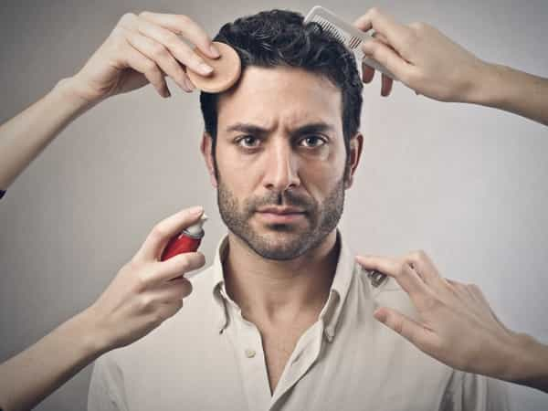

I am sure the majority of RoK readers will know how homosexuality and gay rights are harmful to men on the grand civilizational scale; but, I’m here to talk about how gay rights and the acceptance of gay culture in the mainstream is harming men on a personal level.
Since the late 1960’s, when the baby boomers erupted in misguided fury at the world their forefathers built, fought and died for, gay rights and, in turn, gay culture, has become intimately entwined with the mainstream. Today, with the Western world’s confusion over what it is, gay culture has become sacrosanct, an intrinsic component that is viewed as inviolable and august.
It Has Made Men More Vain

One of the most distinct aspects of gay culture’s grip on the contemporary West is how its influence has made ordinary men vainer. Of course, it’s important for a man to look good, to take care of his body and pay attention to how he dresses. I do it and most of my friends and family do it.
However, to adopt the daily rituals of moisturizing, waxing, applying fake tan, etc., is crossing the thin line between healthily enhancing one’s self-confidence and being consumed by vanity.
As the fashion industry is overly populated with women and gay men, this dangerous mix churns out ever more effeminate looking styles and grooming products for men. We’ve reached a point where some men will spend just as many hours preening themselves in the bathroom mirror as their girlfriends do.
It’s one reason why I think globalists and consumerist entities love to push gay culture wherever they can. The obsession with youth and vanity is the perfect tool to keep businesses coffers permanently overflowing.
It Has Destroyed Men’s Ability To Bond
Today, most men in the West have superficial friendships with other men. They will treat their friends as part of the furniture, and the topics of conversation will be limited to football and where they’re going on holiday. Why has this happened? Well, there are many reasons, with the usual suspects such as hyper-individualism, feminism, etc., playing a part, but the main aspect is Western acceptance of gay culture.
The increasing prominence of gays and the gay lifestyle in media and entertainment has, over many decades, secured in the minds of men what is and is not gay behaviour. For the most part, men, helped in their views by women who want to monopolise their time, will see any bonding or intimacy with other men as gay, thus putting a giant wedge in their ability to forge genuine friendships.
Gay culture has helped to all but destroyed men’s understanding of Platonic love, and it’s clear to me why we see so many men today suffering from various forms of depression and anxiety. For example, if you’re with a woman who’s an emotional drain, have a crappy job, and all your friendships are built on nothing, then wouldn’t you be depressed also?
For many of you reading this, male bonding is still an uncomfortable subject, because the influence of gay culture has informed your way of thinking so much, even without you knowing it.
Most of the friends who I would confidently call brothers are from Eastern/South Eastern Europe or the Middle East (mainly Iran and Turkey) for the simple reason that our bonds are so much greater than with most of my Western friends. This is because all of them were born and raised in countries where homosexuality is highly frowned upon, so the poisonous distortion of Platonic love doesn’t happen.
It Gives Men Unhealthy Sexual Appetites

A man having a bit of fun with a cute girl is healthy and natural. Men need to play the field to a degree, but today, men, from their teens onward, are becoming promiscuous to an unhealthy degree.
Again, there are myriad factors one can attribute to this, but with our elites in assault mode, trying desperately to make gay the new standard, from mainstream media talking about the benefits of “analingus” to anal sex. This rejection of morality and resisting anything but temptation, part and parcel of the gay psyche, is having an obvious and deleterious effect on men.
This obsession with constant sexual gratification, exploring ever more degenerate ways to get that gratification, is leading men down a seedy and perverse path. This has all come about through the promotion of the homosexual lifestyle.
Conclusion
In the words of Henry Makow, “I have no malice toward gays. I feel the same way about people who have the flu. I want them to get better, and I don’t want it to spread.” There are a few gay men out there who I greatly respect, writer Jack Donovan being one of them, but, ignoring the wider societal damage, the embracing of gay culture across the Western world has harmed, more than any other group, heterosexual men.
Read More: America Is Becoming A Homosexual Nation